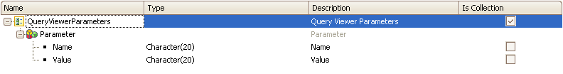

Parameters property is a QueryViewer property which allows sending values to the Query object or Data Provider object at runtime. Values
The &Parameters variable mentioned before is based on QueryViewerParameters Structured Data Type:  Where
Note: Collections type parameters can also be defined as a Query Object parameter. The following code example shows how to do it: &Parameter = New() &Parameter.Name = "ParamCollection" &Parameter.Value = &CollectionVariable.ToJson() &Parameters.Add(&Parameter) Usage exampleImagine having the following Query object: Where the parameter &MakeId was defined to be used as a filter (MakeId = &MakeId). The defined Query Object will be shown in a corresponding QueryViewer control embedded intro a Web Panel. Where also the &MakeId variable is added and defined as Dynamic ComboBox type to load the car brands. The Click event of this variable is programmed so that when the user selects a brand from the ComboBox, the Query Object associated with the control for filtering by that brand is executed again. The code would be as follows:
Event &MakeId.Click
&Parameters = New()
&Parameter.Name = "MakeId"
&Parameter.Value = &MakeId.ToString().Trim() // ‘ToString’ because Value is character and MakeId is numeric.
&Parameters.Add(&Parameter)
EndEvent
CompatibilityWarning: It is recommended to use the new property Object property - QueryViewer insted to change query elements parameters.
See also |
| Backlinks | |
| Max Rows property | QueryViewer control properties |